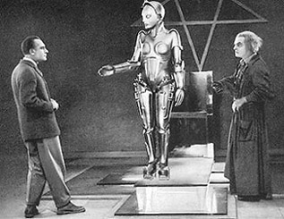

1927 kam "Metropolis" in die Kinos, der Stummfilmklassiker des österreichischen Regisseurs Fritz Lang. In "Metropolis" ist der Zukunftsstaat eine Klassengesellschaft. Während in der achtlosen Unterstadt die Arbeiter wie Sklaven hausen und zehn Stunden am Tag von der Maschine tyrannisiert werden, leben die Menschen der Oberstadt in einer Welt voller Luxus und Überdruss. In Pittsburg gab es ein Robot-System namens "Televox". Es überwachte Wasserbehälter in einem Hochhaus und schaltete bei Bedarf Pumpen ein. "Televox" konnte einen Staubsauger und einen Ventilator in Gang setzen, Lampen ein- und ausschalten, sowie Fenster öffnen und Türen schliessen.